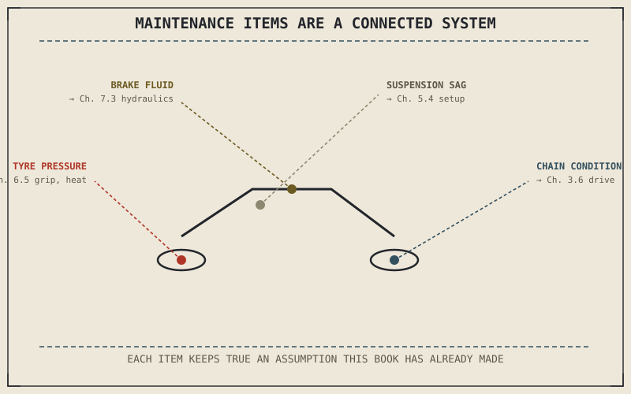

Nine parts of this book have described a motorcycle assuming its components are actually in the condition their engineering intends — correct tyre pressure, functioning damping, clean oil, properly bled brakes. Every technique Part IX taught, and every physical relationship Part VIII established, quietly depends on that assumption holding true. Maintenance is what keeps it true, and this part treats it as exactly that: not a list of chores, but the ongoing work of keeping the physical system this entire book has described actually matching the book's own assumptions about it.
Chapter 9.17 closed Part IX with a promise that this book would turn next to keeping the machine in the condition its techniques have assumed. This chapter opens Part X with that idea properly framed.
Maintenance Items Are Rarely Independent
A single maintenance item, examined in isolation, can look like a simple, self-contained task — check tyre pressure, change the oil, inspect the brake pads. But this book has already shown, repeatedly, how connected these systems actually are: Chapter 6.5 established that tyre pressure changes contact patch size and heat, which Chapter 6.4 connected directly to available grip; Chapter 5.4 showed suspension sag depending on accurate spring preload, which depends on knowing the bike's actual loaded weight from Chapter 9.16. A maintenance approach that treats each item as an isolated checkbox misses how directly one item's condition affects another system's actual performance, in exactly the ways this book has spent nine parts establishing.
Frequency Should Match Actual Physical Wear, Not a Generic Calendar
Manufacturer-recommended service intervals are a reasonable starting baseline, but Chapter 9.13's off-road terrain, Chapter 9.10's sustained highway heat, and Chapter 9.16's loaded, two-up riding all place genuinely different physical demands on the same components a generic interval assumes see average use. A chain ridden predominantly off-road in dust and grit, from Chapter 9.13's terrain, wears through lubrication and accumulates debris faster than the same chain in mixed commuting use, and a maintenance system that only follows calendar intervals rather than tracking actual accumulated wear and riding conditions will systematically over-service some components and under-service others.
A motorcycle's maintenance items aren't a list of unrelated chores — they're the physical embodiment of assumptions this entire book has made about tyre pressure, suspension setup, and brake condition, and letting any one of them drift means one of those assumptions is quietly no longer true.

A diagram showing several maintenance items — tyre pressure, chain condition, brake fluid, suspension sag — each connected by lines to the specific chapters and physical relationships elsewhere in the book that depend on that item being correctly maintained.
A Common Misconception, Cleared Up Early
It's easy to think of maintenance as separate from "real" riding knowledge — a chore handled by a mechanic or worked through from a generic checklist, distinct from actually understanding how a motorcycle works. Every maintenance item this part will cover connects directly back to a specific physical relationship this book has already explained in detail: understanding why a maintenance task matters, not just how to perform it, is a direct extension of everything Parts II through IX already established, not a separate body of knowledge layered on top.
Where This Leads
Understanding maintenance as a connected system sets up this part's first practical chapter: the pre-ride check, a short, structured routine for catching problems before they affect a ride already underway. Chapter 10.2 covers that directly.
Key Concepts to Remember
- Maintenance items are rarely independent — one component's condition, like tyre pressure or suspension sag, directly affects other systems' actual performance.
- Service frequency should account for actual riding conditions and wear, not only a generic calendar interval assuming average use.
- Every maintenance task connects to a specific physical relationship this book has already explained, not a separate body of knowledge from understanding how the motorcycle works.
Cross-References
| ← Ch. 6.5 | Established tyre pressure's effect on contact patch and heat; this chapter shows that relationship as one example of maintenance items connecting to earlier physics. |
| ← Ch. 9.16 | Established loaded riding changing sag and handling; this chapter shows maintenance frequency needing to account for that same variation in use. |
| → Ch. 10.2 | Covers pre-ride checks and the T-CLOCS routine for catching problems before a ride begins. |